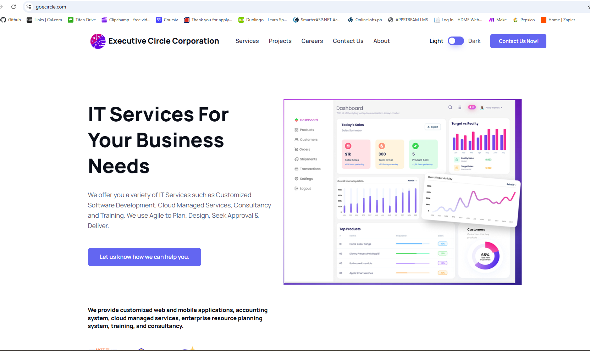
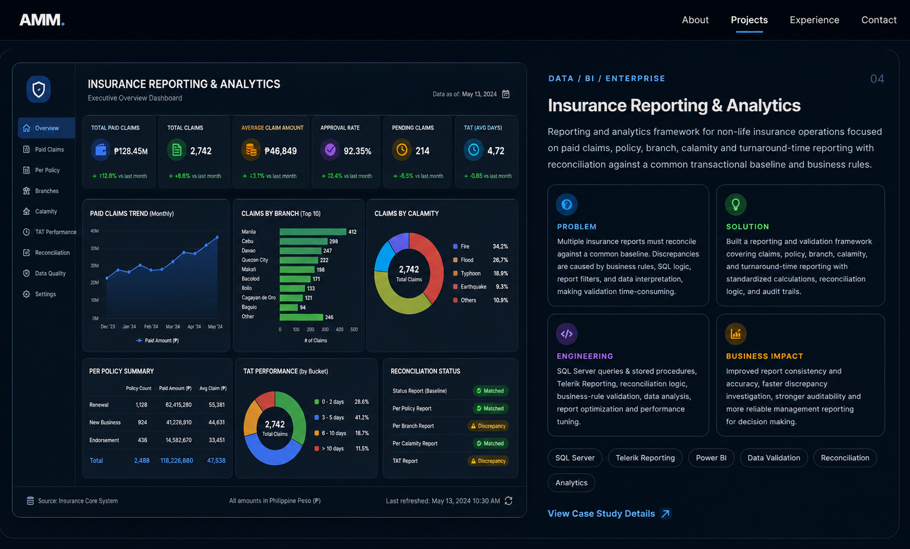

Full Stack Engineering
Designing maintainable enterprise applications across frontend, backend, APIs and integration layers.
IT • AI • SOFTWARE • AUTOMATION
Senior Full Stack Engineer building AI-enabled applications, enterprise systems, cloud solutions, automation and data-driven products.

ABOUT ME
Senior Full Stack Engineer and technology professional with extensive experience designing, developing and delivering enterprise applications, AI-enabled solutions, cloud platforms and business automation systems.
My background spans full-stack software engineering, enterprise architecture, database design, cloud infrastructure, analytics and technical leadership. I work across the complete application lifecycle—from requirements and architecture through development, integration, deployment and optimization.
My current engineering focus combines Angular, React, TypeScript, Node.js, .NET/C#, Python, FastAPI, SQL Server and AWS with AI-assisted development, LLM integration, workflow automation and data-driven applications.
ENGINEERING FOCUS
Designing maintainable enterprise applications across frontend, backend, APIs and integration layers.
Integrating intelligent capabilities into practical business workflows while keeping system boundaries clear and testable.
Building reliable data models, reporting pipelines and analytical solutions for operational and management decision-making.
Delivering cloud-ready systems with containerized development, API-first architecture and modern deployment practices.
SELECTED WORK
Selected work demonstrating full-stack engineering, AI integration, enterprise systems, analytics and business automation.

A portfolio-ready full-stack AI healthcare appointment assistant built to demonstrate conversational scheduling, clean API boundaries, safety-conscious AI behavior, containerized development and cloud-ready architecture.
Artificial Intelligence Computing
Cloud-ready AI-enabled enterprise platform designed to unify core business operations, workflow automation, reporting, analytics and intelligent assistance within a modular ERP architecture.

Production corporate web platform presenting technology services, projects, careers and company information while supporting maintainable content, customer inquiries and responsive access across devices.

Enterprise reporting and analytics framework for non-life insurance operations focused on paid claims, policy, branch, calamity and turnaround-time reporting with reconciliation against a common transactional baseline and agreed business rules.
EXPERIENCE
A progression from infrastructure and application support into software engineering, enterprise architecture, technical leadership, academia and AI-enabled product development.
Executive Circle Corporation
Engineering enterprise applications and AI-enabled business systems across full-stack development, architecture, APIs, data, cloud deployment and automation.
De La Salle–College of Saint Benilde
Combined technical instruction with mentoring, curriculum development, research supervision and academic program support across information technology, systems, development, infrastructure and project management.
JPact, Inc.
Led software delivery across planning, architecture, development, testing and deployment while supporting Agile execution, code quality and technical mentoring.
Teekay Shipping Philippines
Supported marine and vessel-management applications, systems integration, reporting, UAT and operational data quality for engineering and maintenance workflows.
Yacht Tours Maldives Pvt. Ltd.
Managed resort IT operations, infrastructure, enterprise systems, service support, security, vendors, budgets and technology projects supporting multiple business departments.
Convergys Philippines, Inc.
Provided broadband, router, Wi-Fi and home-networking technical support, troubleshooting connectivity, configuration, security and escalated customer issues.
LET'S CONNECT
I'm open to Senior Full Stack Engineering, AI-enabled product development, technical leadership, consulting and selected enterprise technology opportunities.